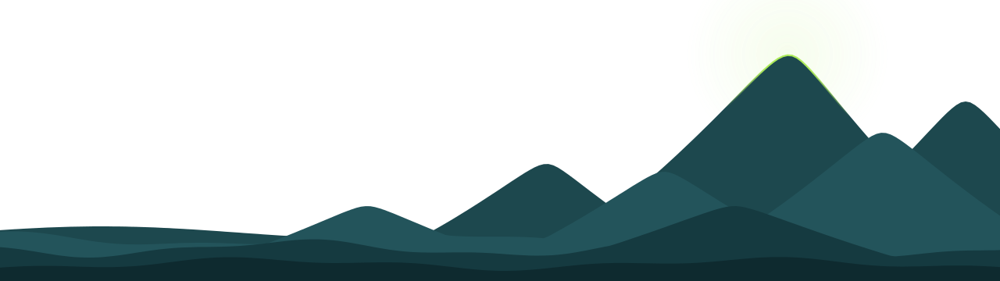
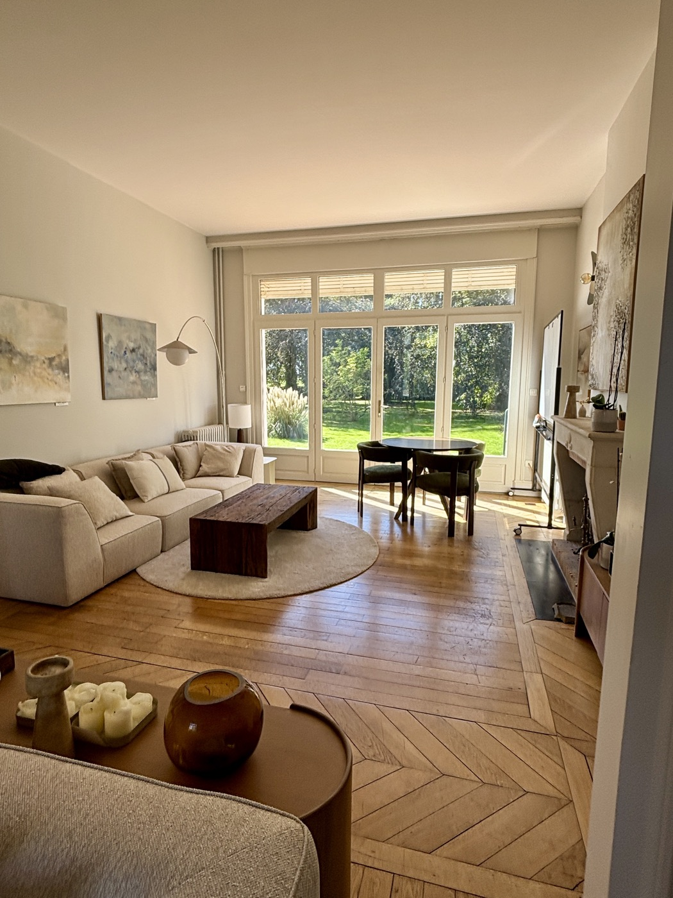

Ce lien ne porte pas de résultat.

Vos réponses, thème par thème, ramenées à 100. Ce n’est pas une note : c’est votre regard.
↓ Ce qui va avec


Chaque thème regroupe une à quatre phrases. Pour chacune, vous avez répondu de « Pas encore » (0) à « Pleinement » (3). Nous faisons la moyenne de vos réponses sur le thème, puis nous la ramenons à 100 : 0 veut dire « pas encore » partout, 100 « pleinement » partout. C’est votre regard, pas une note.
Ici, on compte des personnes. Pour chaque personne qui a répondu, on regarde si le thème est là dans son regard : une moyenne d’au moins 1,5 sur 3, soit 50 sur 100. On sépare ainsi celles qui l’ont et celles qui ne l’ont pas assez. Puis on regarde, dans chaque groupe, la part des personnes engagées, ou qui disent atteindre leurs objectifs. L’écart en points est la différence entre ces deux pourcentages.
Ce sont les réponses des autres personnes, jamais les vôtres seules. Un groupe de moins de 3 personnes n’affiche pas de chiffre. Ces chiffres montrent un lien entre les thèmes et l’engagement : à eux seuls, ils ne prouvent pas une cause.
L’état des lieux s’appuie sur les travaux de Jody Hoffer Gittell. Après une thèse au MIT, elle est devenue professeure à l’université Brandeis, près de Boston. Elle a étudié pendant des années comment des métiers différents travaillent ensemble, d’abord dans les escales de compagnies aériennes, puis dans les hôpitaux. Elle a appelé cela la coordination relationnelle.
Là où l’on partage les mêmes objectifs, où l’on sait ce que fait l’autre et où l’on se respecte, le travail va plus vite, et mieux.
Dans les escales, les avions repartaient plus vite, avec moins de retards et moins de bagages perdus. À l’hôpital, les patients étaient mieux soignés et sortaient plus tôt. Et chacun se sentait mieux dans son travail.
Nos phrases reprennent ses piliers avec nos mots. Nous y avons ajouté la confiance et l’engagement, pour poser notre question : la confiance, le soutien et la cohésion vont-ils avec l’engagement ?
Votre réussite se construit à plusieurs. Nous en posons
les fondations.
Greatly éclaire celles et ceux qui, ensemble, font rayonner leur entreprise.